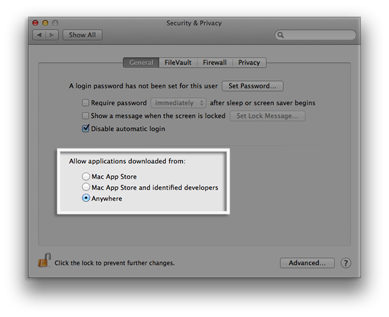

How to install KISS IDE on a MAC
Step 1
First you will need to install the command line tools for your version of OS X. This may have come pre-installed on your Mac. If not, it is available from the OS X install disk or Apple as a free download (registration required). Access requires registration and anyone can join at no cost by filling out the form at https://developer.apple.com/programs/register/.Step 2
OS X 10.8 and 10.9 users will need to disable GateKeeper to allow the KIPR software to install.Gatekeeper is a new feature in Mountain Lion, OS X Lion v10.7.5, and Mavericks OS X 10.9 that builds on OS X's existing malware checks to help protect your Mac from malware and misbehaving apps downloaded from the Internet.
Gatekeeper options
Gatekeeper gives you more control over what you install. You can choose the safest option and only allow apps that come from the Mac App Store to open. There is also the option of only allowing apps that come from the Mac App Store and identified developers. Or you can choose to allow any apps to open, just like previous versions of OS X.
Gatekeeper options are found in Apple menu > System Preferences… > Security & Privacy > General tab under the header "Allow applications downloaded from:"

Please set the option to "Anywhere" as shown above. Note: The lock icon in the bottom left must be unlocked for this change to happen. If it is locked, click on it and enter your password, then change the selection to "Anywhere".